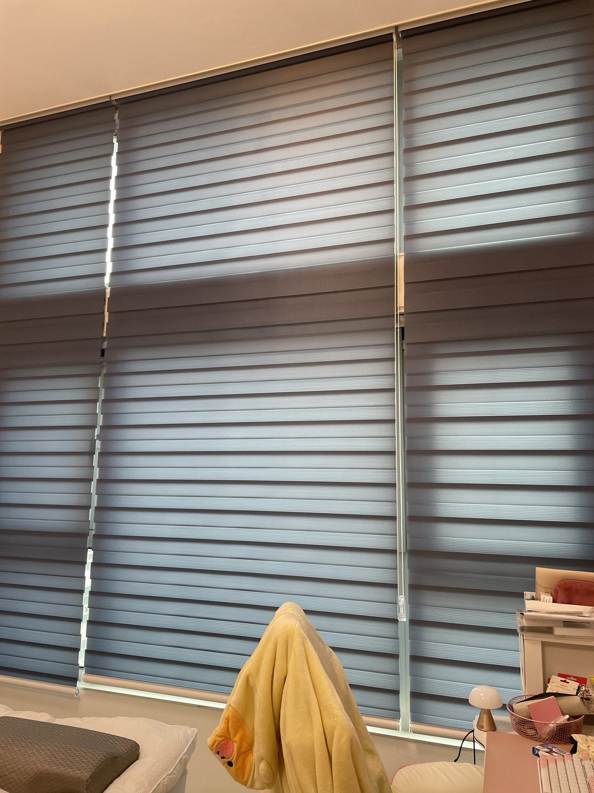
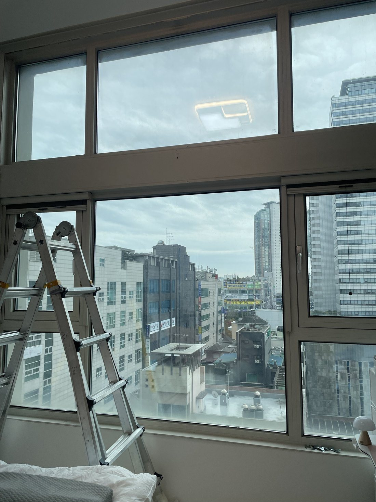
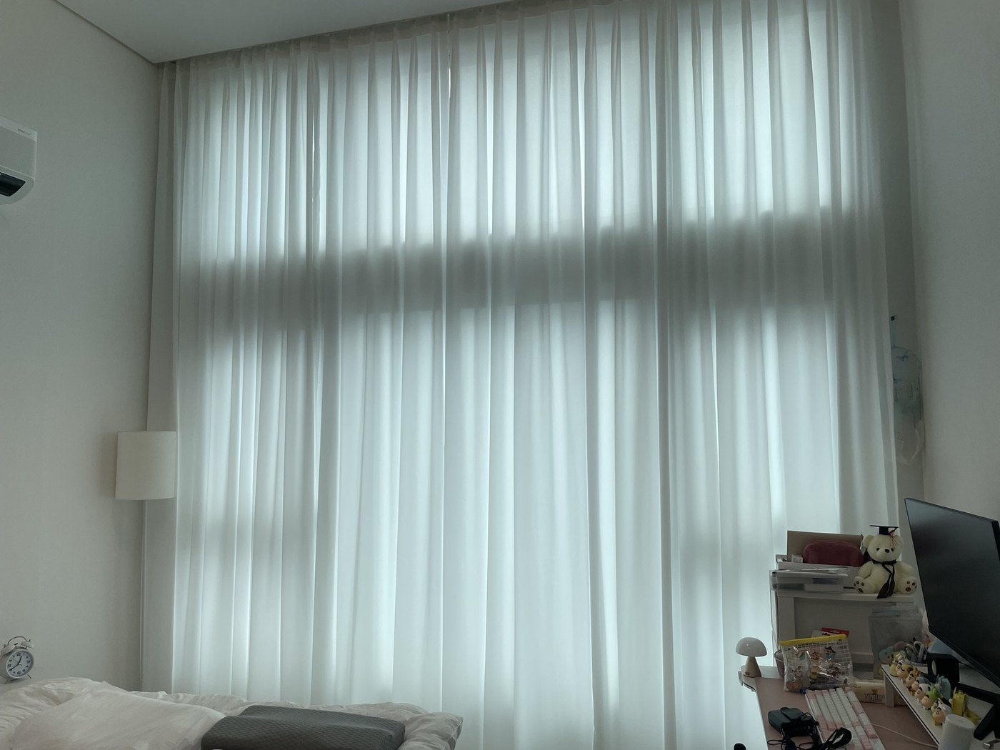
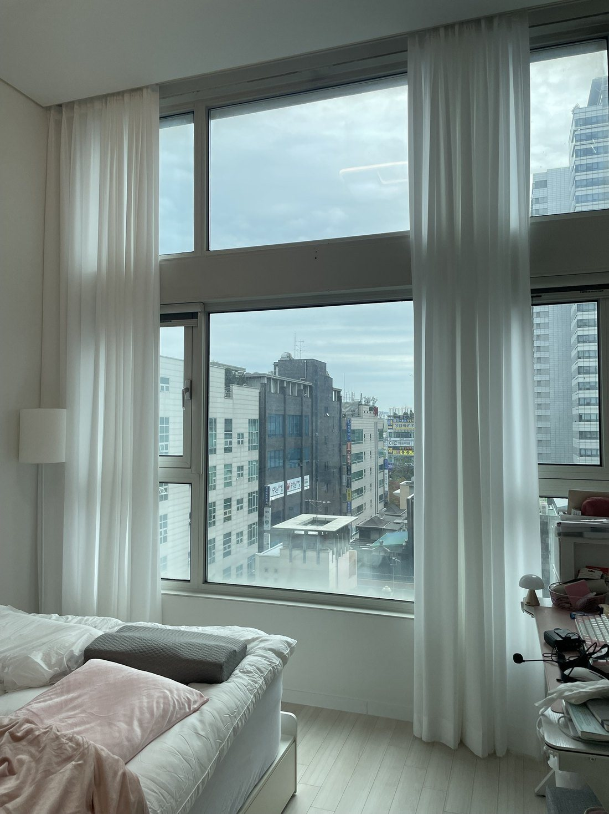
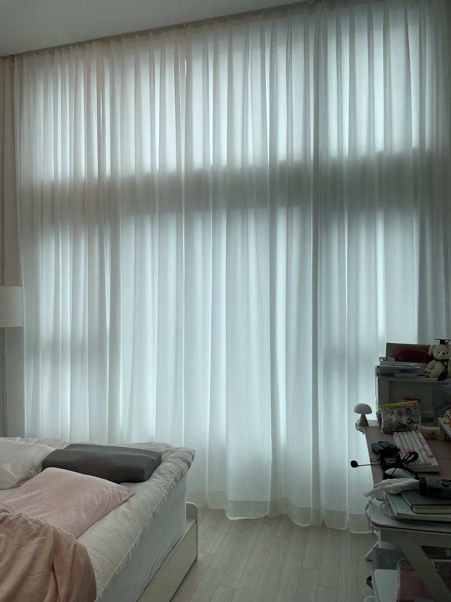

안녕하세요, 수도권 커튼·블라인드 전문 드리움 커튼&블라인드입니다. 이번 현장은 분당 정자동 백궁동양파라곤 오피스텔입니다. 층고가 약 4m인 공간이라 세로 기장을 추가한 화이트 쉬폰을 제작해 달고, 기존 콤비블라인드는 직접 탈거해 드렸어요.
이번 시공 요약
- 위치 · 경기 성남시 분당구 정자동 백궁동양파라곤 오피스텔
- 공간 · 방 (층고 약 4m)
- 제품 · 화이트 쉬폰 커튼 · 세로 기장 추가 제작
- 추가 작업 · 기존 콤비블라인드 탈거
시공 전 — 기존 콤비 탈거


위아래 두 단으로 높게 나뉜 창에 콤비블라인드가 여러 장 달려 있었어요. 저희가 직접 탈거하고 나니 창 높이가 확실히 드러났습니다.
천장부터 바닥까지 화이트 쉬폰


층고가 높으면 기성 커튼은 길이가 모자라요. 세로 기장을 추가 제작해 천장에서 바닥까지 끊김 없이 떨어지게 맞췄습니다. 닫아도 빛을 은은하게 걸러 방이 더 환해 보여요.
높은 창을 더 시원하게

천장 레일에서 시작한 주름이 바닥까지 길게 이어져, 높은 창이 한층 시원하고 정돈돼 보입니다.
드리움은 광명 본사에서 직접 실측하고 시공하며, 서울·경기·인천 전 지역 방문 견적을 무료로 진행합니다. 원단 샘플을 들고 찾아가 창에 직접 대 보며 상담해 드려요.